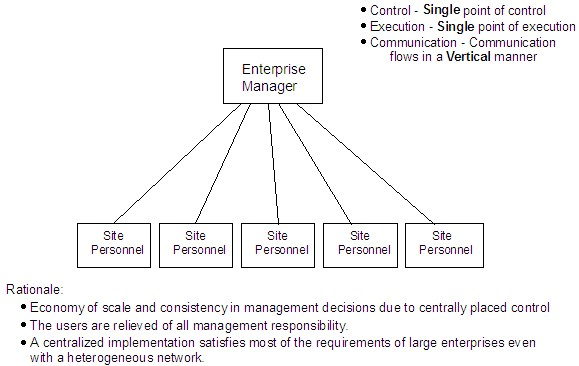
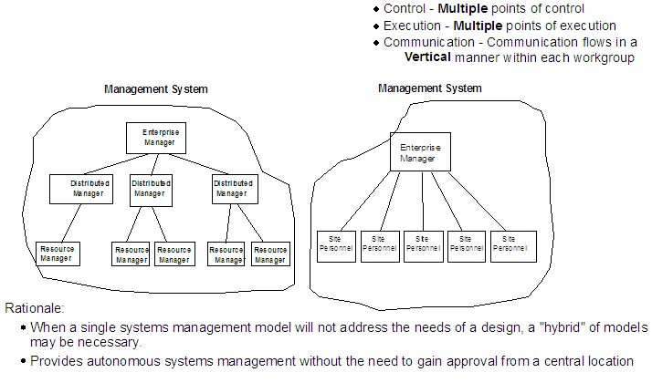
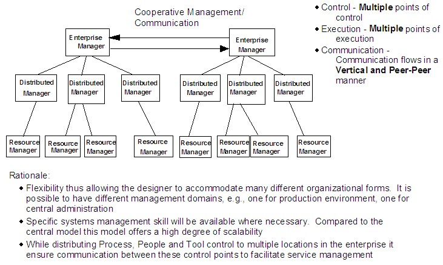
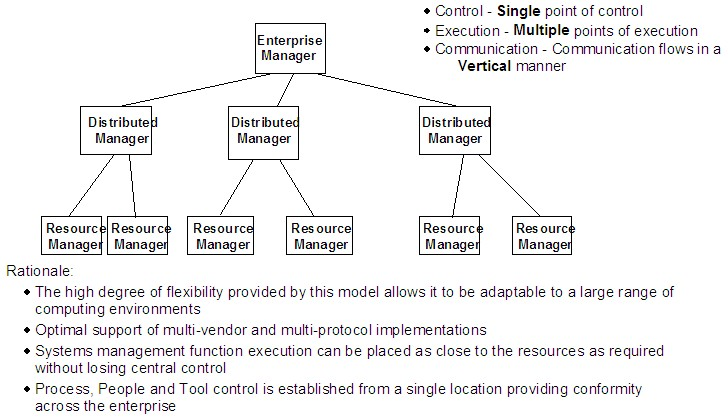
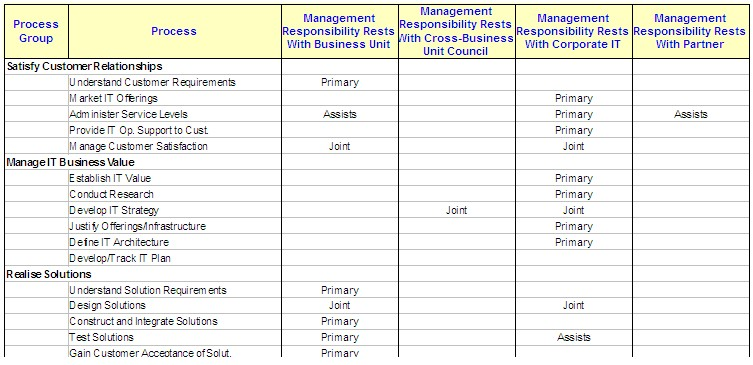
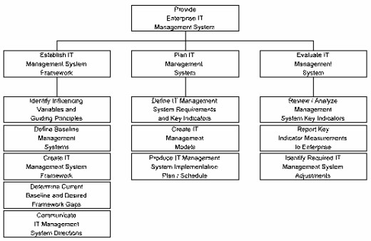

| Example: IT Infrastructure Management Model |
 |
|
Relationships
| Related Elements |
|---|
Main Description
Enterprise Central Model  Workgroup Model  Distributed Model  Enterprise Hierarchical Model  Management Responsibility Matrix  Management Framework For the management model to be effective, the client must have a mechanism for ensuring that future solutions and any associated management responsibilities, processes or tools are implemented in accordance with the chosen IT management model and guiding principles. In addition, the team should also identify and define the processes and performance indicators necessary to establish and maintain the overall IT management framework. These are likely to include some or all of those processes identified within the Provide Enterprise Management System process group from the IBM IT Process Model.  Further information on these processes, their objectives, scope, and activities can be obtained from the IT Process Model Reference Library, available via ICM AssetWeb. |
| © Copyright IBM Corp. 1987, 2012 All Rights Reserved Property of IBM These materials are intended only for use as part of an IBM engagement |